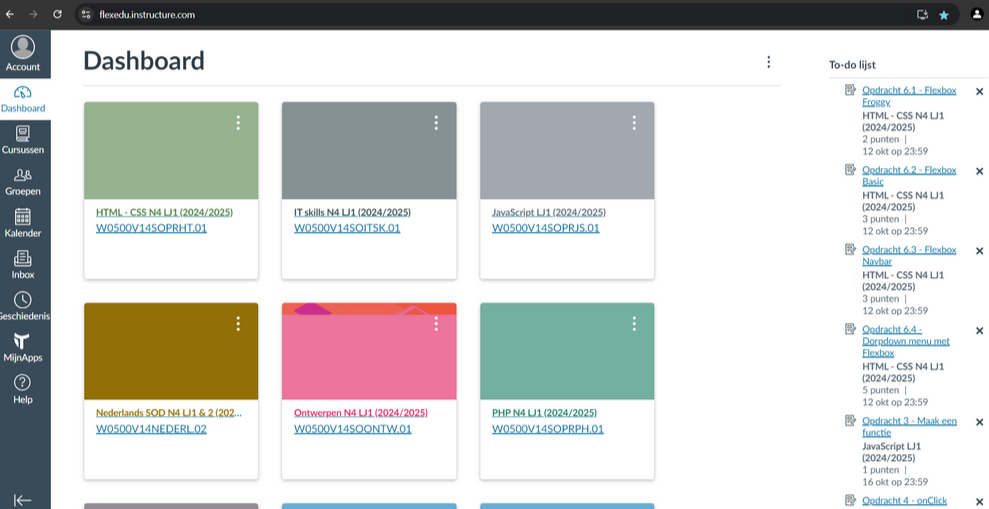
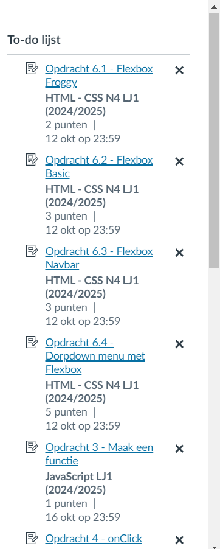
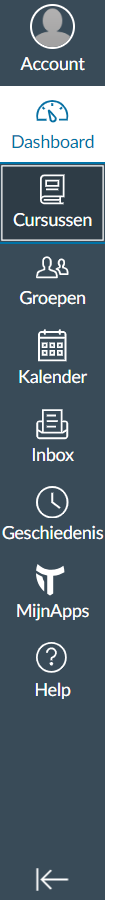

Canvas is het verkozen tot het beste learning management system om het zo even te noemen. Canvas is een applicatie maar ook een website met verschillende tegels waarin vakken worden uitgebeeld. Hier onder staan de verschillen in tegels, zo heeft elk vak een andere foto en is het eigenlijk gewoon een specefiek vak.
In Canvas werk je met een to-do list waarin alle opdrachten worden weergegeven zoals hieronder is te zien
Aan de linkerkant van canvas staat een verticale balk met keuzes waar je uit kunt kiezen zoals hier onder is te zien. Deze keuzes bestaan uit: 'Dashboard, curcussen, kalender, groepen, geschiedenis, index, mijn apps, help. Veel van deze keuzes heb ik nooit gebruikt, meestal alleen dashboard en curcussen
